Weather-Guided Disease Scouting for Smallholder Farms
Adaptation & Resilience / Food Resilience
Universiti Malaya (UM), Malaysia
Leow Shen En, Chong Pohyi, Choong Zhuo Lin, Lee Jia Shern and Teoh Xi Xian
Executive Summary
After a spell of heavy rain, a grower with 30 minutes to scout must decide which blocks to walk first. Black pod, a rain-driven cocoa disease, has been estimated to cause annual losses of 20–30% of cocoa production worldwide. [25] KokoShield uses recent rainfall, a simple block map and previous observations to produce a short, ranked scouting route. Scouts record suspected cases. A grower or agricultural adviser confirms them.
We will test one question on a Malaysian cocoa farm. With the same 30 minutes of inspection time, does a ranked route find more newly confirmed diseased pods per scouting hour than the grower’s usual round? We will compare timed routes and run a common follow-up check to learn what each route missed. Heavy rain has been associated with lower cocoa yield in Ghana, Ecuador and Indonesia, so the local trial answers a question that matters across producing regions. [3, 4]
First deploymentOne Malaysian cocoa farm in Selangor. A working route planner and a target of four usable paired rounds over about six weeks, subject to rain and access.
Next demonstrationRice blast. Demonstrate the second crop profile already in the prototype, then seek a local rice partner for field validation.
Commercial hypothesisA cocoa cooperative or buyer pays RM75 per active farm per season for a cluster of about 20 growers. We will test the fee and renewal with buyers.
The askRM1,200 cash for the one-farm pilot (p.25), plus access to one farm and one agricultural adviser for review.
Sustainable impactLess crop lost to a climate-driven disease, faster post-rain response and block-targeted rather than whole-farm treatment (pp.18–19). Linked to SDG 2.3, 2.4 and 13.1. [26]
Go-to-marketFour phases from one farm (Feb 2027) to a paid 20-farm cluster (2027) and three clusters (2028), each with a go/no-go gate (pp.21–22).
Project Status
The Field Desk browser prototype, Bubble embed and Field Node CAD concept are available and have been tested with demo data. A borrowed university camera drone will map the blocks and check for standing water after heavy rain (concept, p.13). Bubble account integration, physical hardware checks and farm validation remain pending. Pricing and commercial uptake are planning assumptions until tested with a sponsor.
Proposal Overview
How to read this proposal. Each part answers one question for the jury. Section titles are in bold, subtitles are listed beneath, and the number on the right is the page.
Part 1Introduction
Executive Summary1
First deployment, next demonstration and commercial hypothesis
The ask, sustainable impact and go-to-market at a glance
Project Status
Competition Fit and Proposal Guide3–4
Questions for the jury and where each is answered
Market competitor map
Competitor analysis
What the analysis shows
Part 2Problem and Evidence
Research Behind the Climate Risk5
What Remains to Be Measured
Global Cocoa Supply6
Regional cocoa bean production in crop year 2024/25
Malaysian Cocoa Context7
Pilot Geography
Field Photographs and Ground Verification8
What the Scout Records
Confirmation
Part 3Market Gap
Market Gap: What Is Missing Today9
Why the Gap Matters Now
Existing Tools and Competitive Position10
Initial Feature Choice
What Could Erode the Advantage
Part 4Solution and Pilot
Product One: KokoShield Field Desk11
Field Desk prototype running in a desktop browser
Product Two: KokoShield Field Node (Concept)12
Field Node CAD assembly in exploded view
Product Three: Drone Survey (Concept)13
Mapping flight and post-rain flight
Permission, safety and how we test it
Prototype Gallery: The Solution in Use14–15
Plan, walk and record on a phone
Review cases in the scout log
Compare routes, handle missing data and use sensor readings
Scouting Rules and Data Quality16
Response to Incomplete Data
Field Pilot and Comparison Design17
How the Block Groups Work
Sites and Permissions
When a Round Is Usable
Impact Measures and Interpretation18
How We Will Report Results
Decision Rule
Part 5Sustainable Impact
Sustainable Impact19
Impact pathway: activity, output, outcome, impact
Economic, environmental, climate and social indicators
Contribution to the Sustainable Development Goals
Part 6Market and Business Model
Customers and Route to Market20
Who Pays and Why
Commercial Evidence to Collect
Market Implementation Plan21
Sales Steps for the First Paid Cluster
Delivery Model and Partnerships22
Pricing Structure
Partners to Approach
Addressable Market and First Cluster23
Individual cocoa holdings by broad geography in 2023
Unit Economics and Pricing Sensitivity24
Break-even and Renewal
Pilot Budget and Operating Assumptions25
Cost Validation
Part 7Scale, Team and Risks
Cross-Crop and International Adaptation26
Evidence Required Before Scale
Competition Timeline, Team and Delivery27
Team
Risks and Decisions Before Scale28
Evidence to Bring to the Next Site
References29
Reading the Figures
Competition Fit and Proposal Guide
GSC Food Resilience asks how food systems adapt to climate shocks. This proposal addresses the farm decision that follows unusually wet weather: where to look first. Earlier identification gives the grower a chance to remove infected pods and limit marketable crop loss. We measure the scouting step first and track harvest outcomes where the pilot overlaps harvest. [1]
Question for the jury
Evidence the proposal supplies
Why this climate risk?
Malaysian black pod studies, global loss estimates and research on rainfall and cocoa yield across three producing countries (pp.5–7).
What is missing in the market?
Tools diagnose, forecast or record, but none turns a rain event into a time-limited, block-level scouting plan with verified results (pp.9–10).
What would a grower use?
The Field Desk web app with a ranked route, observation log and review. An optional sensor-node concept (CAD and demo data) shows how local readings could feed the plan later, and a borrowed camera drone maps the blocks and shows standing water after heavy rain (p.13).
How would the team prove value?
Paired 30-minute inspections, confirmed pods per scouting hour and a common follow-up check for misses (pp.17–18).
What is the sustainable impact?
An impact pathway from scouting to crop loss, input use and grower income, with indicators measured in the pilot (p.19).
How would it reach the market?
Sponsor-paid cluster service through cooperatives and buyers, rolled out in four gated phases (pp.20–23).
How can it travel?
One reusable route planner with crop, weather and verification settings chosen locally (p.26).
The public GSC Ignite guide lists a project proposal, team information and a two-minute overview video. Build expects documented user feedback and a regional prototype demonstration. [1, 22]
Figure 1. Market competitor map
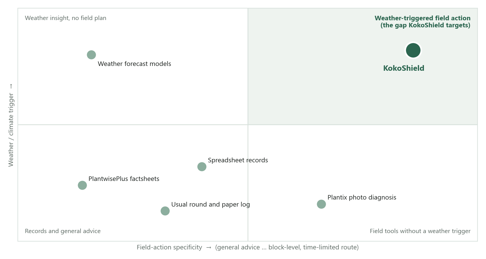
Team positioning of the options a Malaysian cocoa grower can use today, based on the capability comparison on p.10. Positions are qualitative. [5, 6, 23, 24]
Competitor Analysis
Each option was scored on the eight capabilities in the comparison table on p.10 (Yes = 2, Partly = 1, No = 0), grouped into three jobs a grower needs done after heavy rain: deciding when and where to scout, capturing and identifying what is found, and verifying and reporting the result.
Figure 2. Competitor analysis by capability group
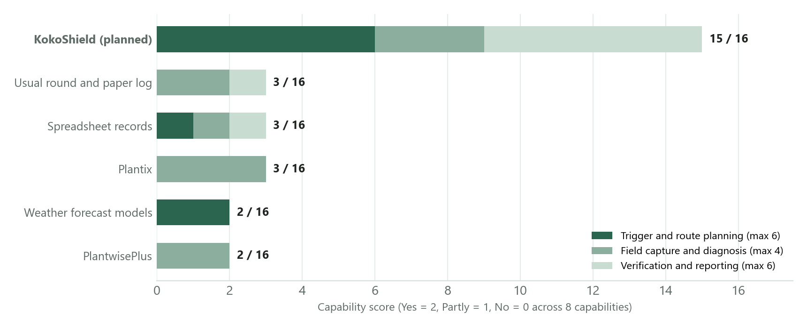
Team assessment from public product descriptions and the cited studies. KokoShield is scored on planned pilot features, which are not yet field-validated. Scores will be checked with growers during discovery interviews. [5, 6, 23, 24]
What the Analysis Shows
Finding
Implication for KokoShield
The top-right quadrant is empty
Forecast models provide the weather trigger, and field tools support the action, but no current option links the two into a block-level, time-limited route. This is the gap KokoShield targets.
Competitors score 2–3 out of 16
Each existing option does one job well. None covers planning, capture and verification together, which is where scouting time is lost after rain.
Diagnosis is not KokoShield’s strength
KokoShield scores 3 out of 4 on capture and diagnosis. It links to Plantix and PlantwisePlus rather than competing with them, so they can be partners rather than rivals.
The lead is on paper until tested
The 15 out of 16 score reflects planned features. The paired field comparison (pp.17–18) must show that the ranked route finds more confirmed pods per hour.
Research Behind the Climate Risk
Black pod, caused mainly by Phytophthora palmivora, is a practical first case. It is the most widespread cocoa disease, and Malaysian studies already document how weather relates to disease observations. For KokoShield, the next question is whether those signals can help field staff choose where to scout within a fixed time. [4–6, 25]
Evidence
What the study found
What it changes in the pilot
Guest, 2007 [25]
Black pod causes estimated annual losses of 20–30% of global cocoa production and is spread by rain splash.
Prioritise prompt detection and removal of infected pods after rain.
Malaysian review [4]
Black pod severity is higher under wetter and more humid conditions.
Ask the grower where moisture lingers. Rate drainage at block level.
Ling et al., 2019 [5]
A weekly model with weather inputs improved on a model based on disease history alone.
Combine weather with field history. Show which signals produced each recommendation.
Kota Samarahan plot [6]
Researchers recorded disease incidence weekly and weather hourly on a plot of roughly one hectare.
Pair dated field observations with local rainfall records and keep timestamps.
Albright et al., 2026 [3]
Heavy wet-season rainfall was linked to lower yields across Ghana, Ecuador and Indonesia. In Ghana, excess wet-season rain and dry-season drought explained 68% of interannual yield variation in the study model.
Use rainfall as the trigger to investigate. Record whether the scouting change helps before pursuing yield effects.
What Remains to Be Measured
Rainfall can affect cocoa yields through several pathways. The 68% figure describes the Ghana yield model. It is separate from black pod incidence and from any KokoShield impact. The global 20–30% loss estimate describes the size of the problem, not the share KokoShield can recover. In Malaysia, the field test will show whether the available weather and block information can identify useful early stops.
A confirmed pod is an operational finding. A later harvest assessment is needed to judge whether earlier detection leads to more marketable pods.
Global Cocoa Supply
Cocoa production spans several regions. Africa accounts for the largest share in the International Cocoa Organization’s 2024/25 annual report estimates, which also show sizeable production in Latin America and Indonesia. A Malaysian pilot provides a starting point for a repeatable scouting method. [19]
Figure 3. Regional cocoa bean production in crop year 2024/25
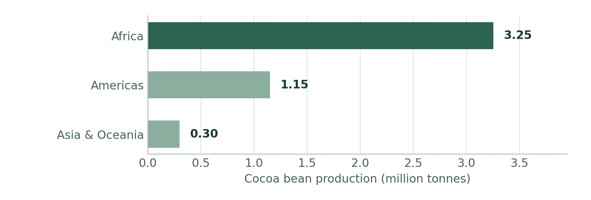
ICCO Annual Report 2024/25 estimates in million tonnes. Regional figures are rounded. [19]
Scale
Published indicator
Implication for replication
Global
The August 2026 ICCO bulletin estimates gross output of 4.733 million tonnes for 2024/25. [20]
A large crop supply chain exists across several producing regions.
Southeast Asia
The annual report estimates Indonesia produced about 200,000 tonnes in 2024/25. [19]
Indonesia is a candidate to test the same cocoa workflow with a new partner.
West Africa and Latin America
Rainfall and yield research includes Ghana and Ecuador. [3]
Use local crop calendars and field checks to validate the relationship in any new trial.
The regional chart and the updated world total come from different ICCO publications. Crop-year estimates are subject to revision. Global bean tonnage describes the size of the sector and cannot be converted directly into software revenue.
Malaysian Cocoa Context
The Malaysian Cocoa Board reported 6,580 hectares of cultivated cocoa in 2025. Smallholdings accounted for 5,662 hectares, about 86% of the total. Because most cocoa is grown on small, scattered holdings, a cooperative or buyer that reaches several farms through one coordinator is the practical delivery channel. [2, 16]
Figure 4. Malaysia cocoa area by sector in 2025
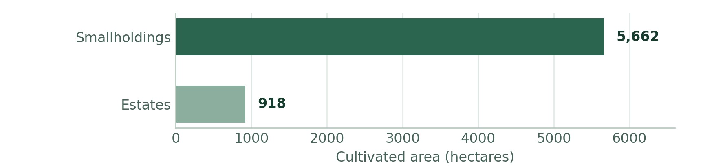
Malaysian Cocoa Board national cultivated-area totals. [2]
Figure 5. Malaysia cocoa bean production from 2021 to 2025
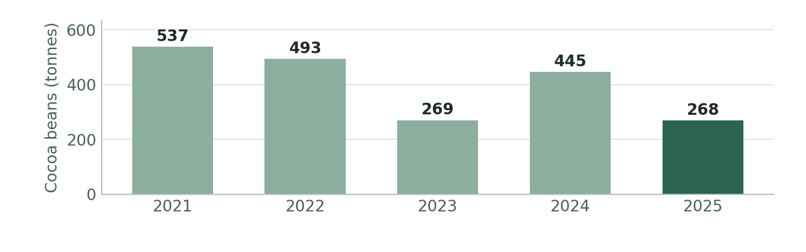
Malaysian Cocoa Board national production totals. The series includes all production drivers and does not identify disease-attributable losses. [2]
Pilot Geography
Tanjung Sepat in Selangor is a practical candidate because it is about 1.5 hours by road from UM, and the Kuala Langat Municipal Council lists Lee’s Cocoa Farm there. Site approval and the availability of scouted blocks are not yet confirmed. Selangor is the validation site only. Paid clusters are planned for Sabah and Sarawak, which hold most cocoa holdings (p.23). A later trial should use a different grower and compare the result with the first farm. [7, 21]
Field Photographs and Ground Verification
The two photographs show real cacao pods and visible damage associated with black pod rot. They are published reference photographs from separate settings. The pilot will create its own dated observation records with the grower’s permission. [17, 18]
Figure 6. Cacao pods in the field and a reference example of black pod rot. Photo links and licences appear below each image. [17, 18]
What the Scout Records
At each stop
Why it matters
Block, time and time spent
Links each observation to the route and makes timed rounds comparable.
Pod or tree identifier and photo
Supports review and helps avoid counting the same pod twice.
Suspected, confirmed or unresolved
Separates a field observation from a confirmed finding.
Action taken and date
Records pod removal or treatment by block, so response time and input use can be measured (p.19).
Follow-up and access constraints
Shows whether a site was checked and why scouts skipped it.
Confirmation
The grower or agricultural adviser will review suspected cases using the same standard across both routes. Unresolved observations stay visible and are reported separately. In the proposed pilot, confirmation is an informed field judgement based on visible symptoms. [9]
Market Gap: What Is Missing Today
Smallholder cocoa growers already have ways to identify symptoms, read a forecast and keep records. What they lack is a tool that turns “it rained heavily” into “walk these blocks first, in this order, in the time you have”, and then shows whether that advice worked. KokoShield is designed for that missing step.
Grower need after heavy rain
What is available today
What is missing
Know when to scout
National rainfall data [8] and research forecasting models [5] exist, but they work at district or plot level.
A farm-level trigger the grower agrees with, such as a rain threshold at the nearest gauge.
Know where to look first
The usual round, decided from memory and habit.
A block-level priority list that explains each stop (wet block, previous case).
Fit a fixed time budget
Nothing on the market plans scouting around a time limit.
A route sized to the 30 minutes available, skipping closed blocks.
Identify the symptom
Photo apps such as Plantix [23] and factsheets such as PlantwisePlus [24].
Not missing. KokoShield links to existing advice instead of rebuilding it.
Prove the effort paid off
Paper logs and spreadsheets [6] record what happened.
A paired, timed comparison with a check for missed cases.
Show coverage to a buyer or cooperative
Ad-hoc reports, if any.
A dated, exportable record of scouting coverage and follow-up across a cluster.
Why the Gap Matters Now
Driver
Effect on demand
More rainfall extremes
Heavy wet-season rain is already linked to lower cocoa yield in three producing countries. [3] Growers face more post-rain decisions, often with the same labour.
Scattered smallholdings
About 86% of Malaysian cocoa area is smallholdings. [2] Advisers cannot visit every farm after every rain, so growers need a simple plan they can run themselves.
Buyer interest in supply continuity
Cooperatives and buyers that depend on smallholder beans have a reason to fund a low-cost service that protects supply. KokoShield will test whether they will pay (p.21).
Positioning. KokoShield does not replace diagnosis apps, forecasts or advisers. It sits between them and the scout’s next walk, and it is the only option on this page that measures whether its own advice found more disease.
Existing Tools and Competitive Position
The table compares KokoShield’s planned pilot features with the approaches a Malaysian cocoa grower can use today. KokoShield’s advantage is narrow and testable: a ranked, time-limited route with a reason beside each stop and a built-in comparison. [5, 6, 23, 24]
Capability
Usual round and paper log
Spreadsheet records [6]
Weather forecast models [5]
Plantix [23]
PlantwisePlus [24]
KokoShield
Works offline or on paper
Yes
Partly
No
Partly
Partly
Yes (printed route)
Uses rainfall as a trigger
No
Partly
Yes
No
No
Yes
Ranks blocks within one farm
No
No
No
No
No
Yes
Fits a fixed time budget
No
No
No
No
No
Yes
Identifies symptoms from photos
No
No
No
Yes
Factsheets
Photo for review only
Confirms cases with an adviser
Informal
No
No
No
No
Yes
Measures misses and finds per hour
No
No
No
No
No
Yes
Cluster coverage report for a sponsor
No
Manual
No
No
No
Yes (CSV export)
Team assessment from public product descriptions and the cited studies, to be checked with growers during discovery interviews. “Partly” means the capability exists but needs manual work or a connection.
Initial Feature Choice
A searchable list of blocks, a reason beside each recommended stop and an exportable checklist are enough to test the decision. The pilot keeps any advisory service the grower already uses. Feedback will show whether integrating advice or simplifying the route matters more.
What Could Erode the Advantage
A diagnosis app could add field routing, or a cooperative could build its own spreadsheet rule. KokoShield’s defence is evidence and fit: verified paired results by round, simple setup by a cluster coordinator, and a data record that sponsors can use. Without those results, it should not claim an advantage.
Product One: KokoShield Field Desk
The working browser prototype takes a grower from a weather scenario to an ordered scouting route. It keeps the reason for each stop visible, excludes closed blocks and compares both routes using the same time limit.
Figure 7. Field Desk prototype running in a desktop browser
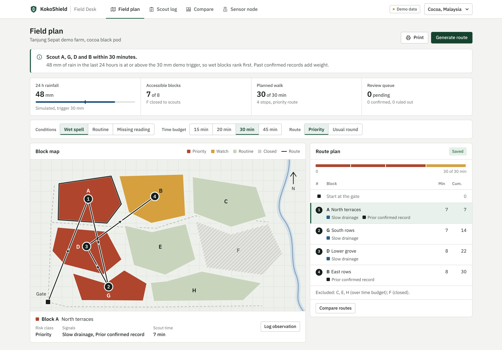
Actual prototype screenshot showing the Malaysia cocoa profile. The map, weather numbers and field outcomes are demo data.
Screen
Working functions
Field plan
Select a crop, weather scenario and time budget. Select a block, generate a route or print it.
Scout log
Save a count, note and optional photo. Review, confirm or rule out a record. Export the CSV.
Compare
Use preset findings to compare priority and usual routes, time to first find and mock misses.
Sensor node
Rotate the CAD preview and import demo JSON. Apply the stored reading to the field plan.
Verified on desktop, mobile and in an iframe. Records stay in browser storage. The Bubble embed is ready to paste into a Bubble HTML element. Installation in the team’s Bubble workspace requires account access. The full kit is also attached to this PDF (open the Attachments pane in a PDF reader).
Product Two: KokoShield Field Node (Concept)
The optional Field Node is a CAD concept for collecting local air temperature and humidity at block level. It is not yet a physical device. The app accepts a demo JSON reading and can use it to update the selected crop’s field plan. The pilot does not depend on it: rainfall comes from the nearest public gauge or the grower’s own records. [8]
Figure 8. Field Node CAD assembly in exploded view
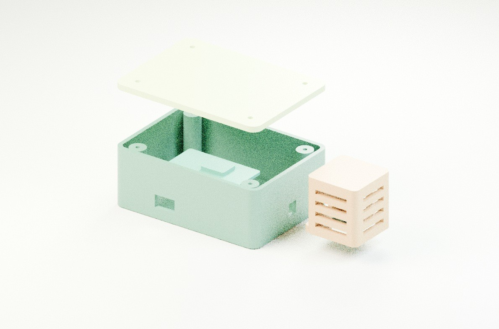
Render from the CAD assembly showing the lid, enclosure base, controller size envelope and ventilated sensor hood. Physical fit and outdoor operation remain to be validated.
Part
Purpose
Electronics enclosure
86 × 62 × 32 mm base before mounting tabs, with removable lid and cable openings. The controller geometry is a size envelope.
External sensor hood
Vented compartment for an air temperature and humidity sensor. Rainfall and leaf wetness need separate readings or field records.
Files in the ZIP
Editable STEP assembly, GLB viewer model, three STL parts, CadQuery source, demo telemetry JSON, embed code and setup guide.
For an offline copy of the complete kit, open the PDF’s Attachments pane in a PDF reader. The prototype includes telemetry import and simulation. Live device connectivity, mounting and weather testing are future work and are not part of the pilot budget.
Product Three: Drone Survey (Concept)
A small camera drone, borrowed from Universiti Malaya, gives the Field Desk two things from above: an accurate block map at setup, and a quick check for standing water after heavy rain. That check strengthens the “wet or slow-draining block” signal (p.16). The drone does not look for disease: black pod develops on pods hanging under the canopy, which a drone cannot see reliably.
Figure 9. Drone survey concept: mapping flight and post-rain flight
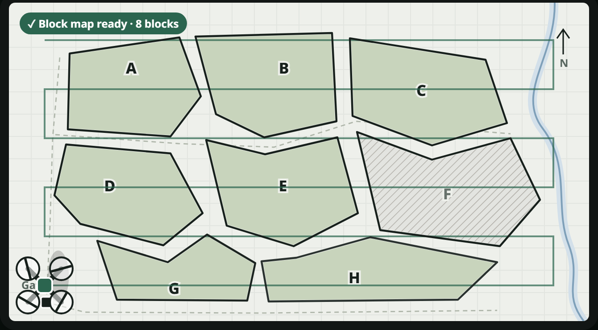
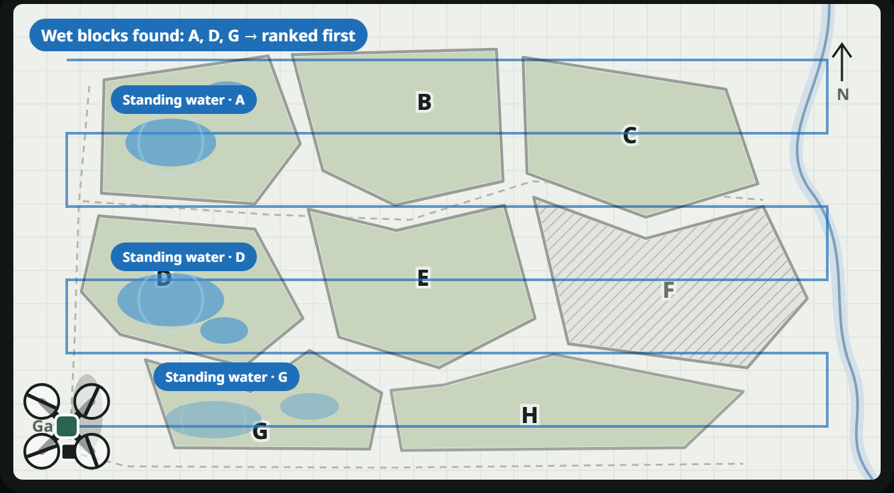
Left: a back-and-forth flight maps the farm and confirms its eight blocks. Right: after a 48 mm storm, a second flight marks standing water in blocks A, D and G, which the ranked route then puts first. Drawn on the KokoShield app’s map of the demo farm; illustrative, not field data.
Flight
When
What it produces
How KokoShield uses it
Mapping flight
Once at setup, with the grower
An overhead photo mosaic of the farm
Draw and check block boundaries in the Field Desk map
Post-rain flight
Within 24 hours of a rain trigger, once it is safe to fly
Photos showing standing water and slow-draining ground
Mark wet blocks, alongside the grower’s own observation
What the Drone Will Not Do
It will not detect black pod and it will not spray. Every confirmed case still comes from scouts on foot and adviser review.
Equipment, Permission and Safety
The team will borrow a camera drone from Universiti Malaya, flown by a trained team member, so it adds no cash cost to the pilot (p.25). Flights happen only with the grower’s written consent, under current Civil Aviation Authority of Malaysia (CAAM) rules, and never during storms or lightning. Drone photos follow the same data terms as farm maps.
How We Will Test It
In each pilot round, the team records whether the drone’s wet-block reading matches the grower’s. If the drone adds no new information after two rounds, the pilot keeps the grower’s observation and drops the extra flight (p.28).
Prototype Gallery: The Solution in Use
These screens come from the working Field Desk prototype, captured with its built-in demo farm. They follow one post-rain round from start to finish. Maps, readings and cases are demo data, and the scout photo is a reference image. [18]
1 PlanRain reading ranks the blocks and sizes the route to 30 minutes.
2 WalkThe scout follows the route on a phone or a printed checklist.
3 RecordEach stop logs block, pod count, note and an optional photo.
4 ReviewThe grower or adviser confirms or rules out each case.
5 CompareRanked and usual routes are compared in the same time.
Figure 10. Prototype gallery (panels A–G)
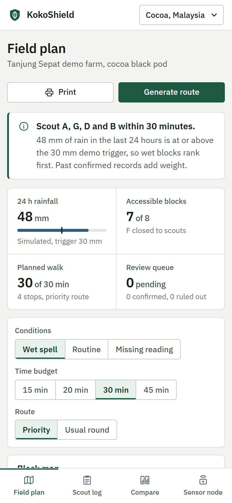
A. Plan on a phone. 48 mm of rain is above the 30 mm trigger, so the app asks the scout to cover A, G, D and B within 30 minutes.B. Record in the field. Each observation shows block, note, pod count, route and time, with its review status.C. Printable route. The same ranked route as a printed checklist with minutes per stop, for use without a signal. Blocks over the time budget and closed blocks are listed as excluded.
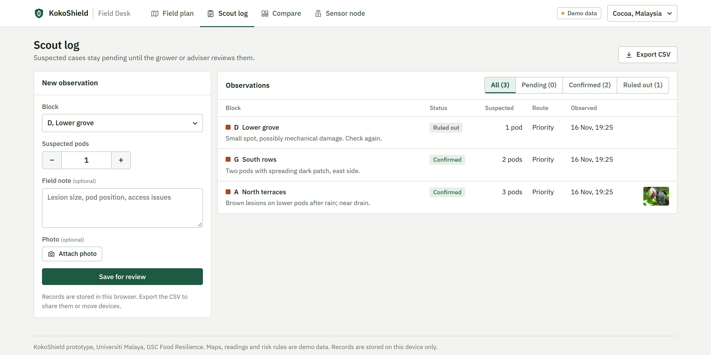
D. Review queue. The adviser confirms two cases and rules out one possible mechanical-damage spot. Only confirmed pods count toward the primary measure (p.18).
Prototype Gallery (continued)
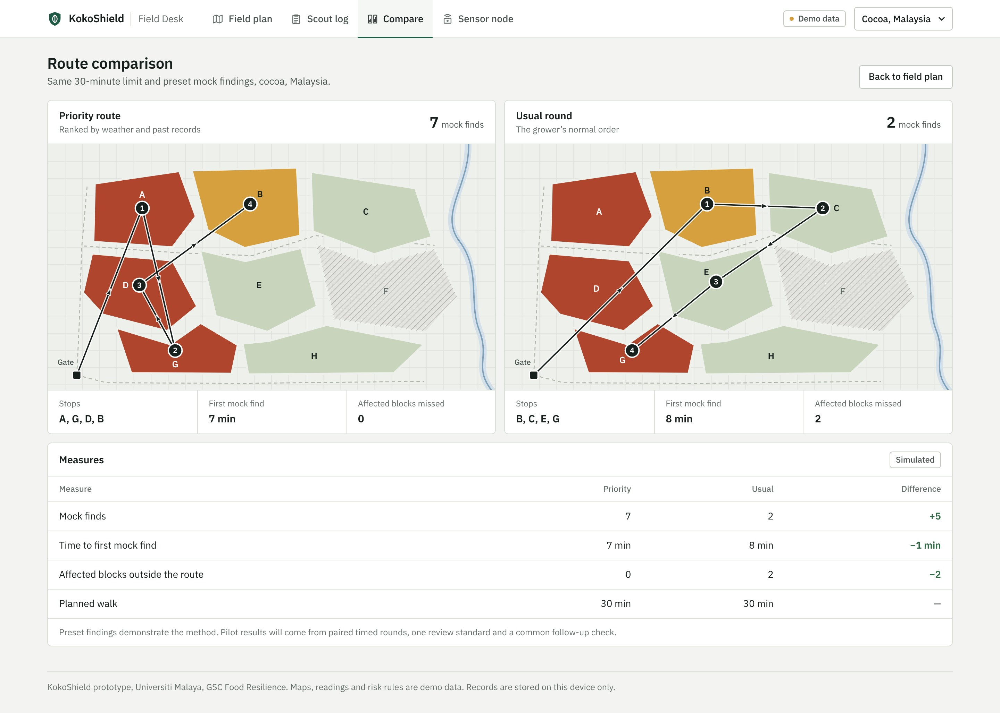
E. Compare routes. The ranked and usual routes side by side under the same 30-minute limit, with time to first find and affected blocks missed. These are preset mock findings that demonstrate the method. Pilot results will come from timed field rounds (p.17).
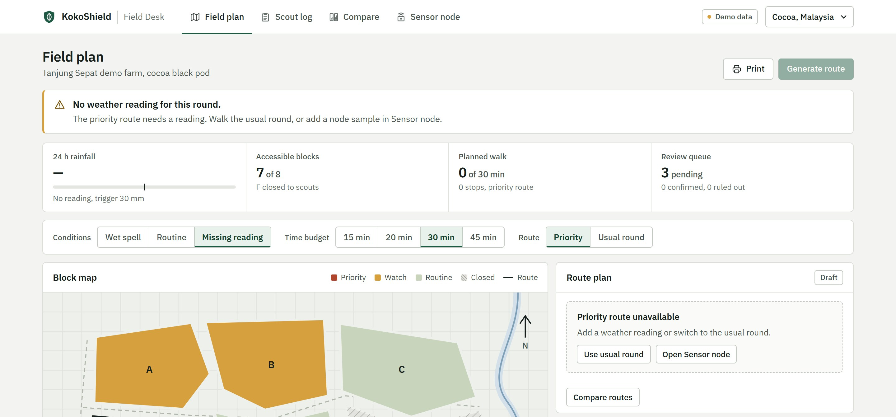
F. Missing data. With no weather reading, the app does not guess. It disables the priority route and offers the usual round or a sensor sample (p.16).
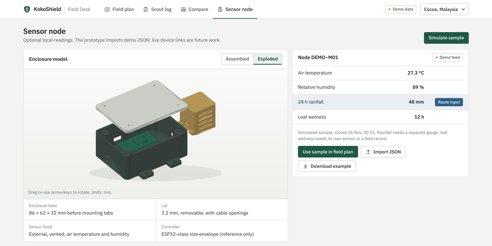
G. Sensor-node input. A demo Field Node reading (air temperature, humidity, rainfall and leaf wetness) can be applied to the field plan. Live device links are future work.
What the gallery shows. The full decision loop already runs in a browser on a phone or desktop: trigger, ranked route, field record, review and comparison. The pilot now needs to test it on a real farm with real rain.
Scouting Rules and Data Quality
Before field comparison, the grower and adviser agree on which local conditions merit an extra scouting round. Weather starts a review. The map and case history set the order of blocks. The rule and the usual route are frozen before each scored round.
Proposed starting trigger (to agree with the grower). A scored round is called when the nearest public rain gauge [8] or the grower’s own gauge records at least 30 mm in 24 hours (the threshold used in the prototype), or rain falls on three consecutive days. The round takes place within 48 hours of the trigger. The threshold will be adjusted to local experience before the first scored round and then kept fixed.
Signal
Example points
Pilot treatment
Wet or slow-draining block
3
Use a grower observation, a mapped rating or a post-rain drone photo of standing water (p.13). Record which source was used.
Previously confirmed issue
2
Use cases known before the round. Keep photos pending review separate.
Missing or inaccessible
Excluded, not scored
Remove the block from the route, flag the reason and make any grower override visible.
Figure 11. Example priority scores for four farm blocks
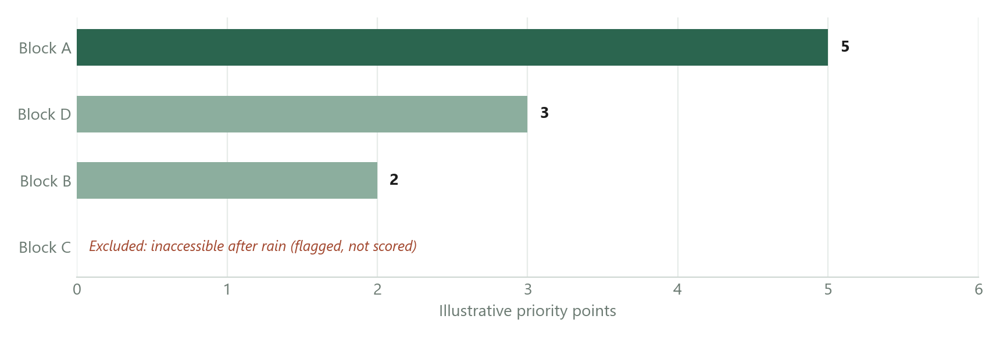
Illustrative points for a prototype demonstration. Block A = wet (3) + previous case (2). Block C is excluded because it is inaccessible, not scored as zero. Scores are KokoShield design assumptions and will be reviewed with the pilot grower.
Response to Incomplete Data
If the weather record is missing, show the date of the last reading and ask the grower to record local conditions before generating a route. If there are no past cases, use the grower’s map and baseline round as a starting point. Record any rule change so each result can be traced to the version used. The pilot data model separates farms, blocks, rounds, observations, reviews and telemetry snapshots. Farm maps and photos are shared only with authorised trial participants, and retention is agreed before collection.
Field Pilot and Comparison Design
We propose one Malaysian farm, two comparable groups of blocks and a target of four usable post-rain rounds over about six weeks. The design compares the order in which scouts walk within the same time budget.
How the Block Groups Work
The grower’s scouted area is divided into 8 to 12 blocks of similar size. These are split into two groups that are matched on size, drainage and past cases. Each group holds more blocks than one scout can cover in 30 minutes, so the order of visits matters. In each round, one scout follows the KokoShield ranked order within one group, and the other follows the grower’s usual order within the other group. Groups and scouts swap every round, so each group is walked by both methods across the pilot.
Method
Protocol
Before the round
Confirm the rain trigger, access and the two block groups. Record the usual route before showing recommendations.
Drone check (optional)
Within 24 hours of the trigger, where safe and permitted, fly the post-rain survey and note which blocks show standing water. Compare it with the grower’s own reading.
Two timed routes
Two scouts work at the same time for 30 minutes each. Randomise the first assignment, then rotate scouts and block groups each round.
Common field capture
Use the same form, location identifiers and recording steps. Walking and recording count toward the 30 minutes.
Confirmation
Use one agreed review standard. Where practical, hide which route produced each suspected case during review.
Follow-up
On the same visit, run the same systematic check of every eligible block in both groups to count missed cases. Usual farm care continues.
Sites and Permissions
Ask a candidate grower to help select safely accessible, regularly scouted blocks and confirm permission to keep observations and photos. Tanjung Sepat is a candidate for an interview and trial. Farm access and adviser participation are pending. [7]
When a Round Is Usable
A round is usable when both timed walks, the eligible blocks, timestamps and the follow-up outcome are recorded. Rounds with zero cases are kept. Weather and access constraints that invalidate a comparison are flagged. If too few useful rain events occur, we report usability and data coverage and extend the test before making performance claims.
Impact Measures and Interpretation
The primary outcome is newly confirmed diseased pods per scouting hour, used throughout this proposal as “confirmed pods per hour”. The design also measures speed and misses, so a route cannot look successful just by concentrating on a few obvious blocks.
Measure
Calculation and interpretation
Confirmed pods per hour (primary)
Newly confirmed diseased pods divided by recorded scouting hours. Show paired differences by round and totals.
First detection
Minutes to the first observation later confirmed. Report rounds with no confirmation separately.
Missed cases
Cases first found on the common follow-up check. Record skipped and inaccessible blocks.
Response time
Hours from the rain trigger to the first scored round, and days from confirmation to pod removal.
Usability and adoption
Route completion, grower overrides and willingness to rerun. Record why any route decision was changed.
Harvest observation
Marketable pods as a share of assessed pods, where records are available. Exploratory at one site.
Cross-crop results (confirmed affected blocks per scouting hour) are a future measure for the rice-blast field trial on p.26. They are not part of the cocoa pilot.
How We Will Report Results
Show each paired round, its conditions and the cases verified later. Count the rounds with improvement, no detectable difference and lower performance. A single-farm study can guide a second pilot. A stronger harvest claim would need repeat observations across farms and harvest periods.
Decision Rule
Proceed to a second site when all three hold: (1) the ranked route records more confirmed pods per hour in at least 3 of 4 usable rounds (or at least 75% of usable rounds if the trial is extended); (2) the follow-up check finds no block missed by the ranked route in two or more rounds; and (3) the grower says they would use it again. Investigate any increase in misses before expanding.
Sustainable Impact
KokoShield’s impact comes from one behaviour change: after heavy rain, scouts look in the right place sooner. The pathway below shows how that change could reduce crop loss, input use and income risk. Each link has an indicator, so the pilot can show which links hold and which do not.
ActivityRain trigger produces a ranked 30-minute route. Scouts log and an adviser confirms cases.
OutputMore confirmed pods per scouting hour, found sooner, with misses counted.
OutcomeInfected pods are removed earlier, and treatment targets affected blocks instead of the whole farm.
ImpactFewer pods lost, steadier smallholder income and a cocoa supply that copes better with wet seasons.
Dimension
How KokoShield contributes
Indicator
Pilot measurement
Economic
Finding infected pods earlier and removing them limits spread by rain splash to healthy pods, protecting saleable beans. [9, 25]
Confirmed pods per hour. Share of marketable pods.
Primary measure in every round. Marketable share is exploratory, where harvest overlaps.
Environmental
A block-level map of confirmed cases lets the grower treat only affected blocks instead of spraying the whole farm. This could reduce fungicide use, including copper-based products. [4]
Blocks treated per round and treatment logged per block.
Record a two-week baseline of the grower’s usual treatment, then log treatment during the pilot. No reduction is claimed until measured.
Climate adaptation
Turns rainfall extremes into a planned, timed response rather than a delayed reaction.
Hours from rain trigger to first round. Days from confirmation to removal.
Logged for every round from timestamps.
Social
Makes scouting time count for growers with limited labour. Gives scouts a simple digital skill and the grower a record they own.
Scouts trained. Route completion. Willingness to rerun.
Count, plus a short interview after rounds 1 and 4.
Contribution to the Sustainable Development Goals [26]
SDG target
KokoShield link
2.3 Smallholder productivity and incomes
Protects saleable cocoa on small farms with a low-cost, sponsor-paid service.
2.4 Resilient agricultural practices
Builds a repeatable post-rain scouting practice that strengthens capacity to adapt to extreme weather.
13.1 Resilience to climate hazards
Links rainfall extremes directly to a farm action, with measured response times.
17.17 Partnerships
Grower, adviser, university team and cooperative or buyer share the cost and the evidence.
What we will not claim from one farm: a yield increase, a reduction in fungicide use or income gains. These need repeat seasons and more farms. The pilot measures the first links in the pathway and reports the rest as hypotheses.
Customers and Route to Market
The grower or field scout is the daily user. The first buyer to test is a cocoa cooperative or buyer with enough participating farms to share setup and support costs. The Malaysian Cocoa Board’s Cocoa Cluster Development Programme offers a local precedent for organising cocoa growers by cluster. [16]
Stakeholder
Reason to participate
What to verify
Grower and scout
A manageable walk when inspection time is limited, and fewer pods lost.
Does the route fit field access and existing routines?
Cluster coordinator
A dated record of field coverage and follow-up across farms.
Can the coordinator maintain maps and reviews within a normal workload?
Cooperative or buyer (paying sponsor)
Support for grower operations and a way to track supply continuity and good practice over time.
Who approves a seasonal fee, and what would justify renewal?
Agricultural adviser
A consistent field record to review across both routes and farms.
Can the adviser review unresolved cases within 48 hours?
Malaysian Cocoa Board cluster programme
A low-cost tool that fits existing cluster organisation. [16]
Would the programme introduce KokoShield to its clusters or co-fund a trial?
Who Pays and Why
Growers use the basic route and printable checklist free of charge. The paying customer is a sponsor (a cooperative, buyer or programme) that pays per active farm per season, because it gains a cluster-wide record and protects the beans it buys. This keeps the cost away from smallholders, who are the most price-sensitive group.
Commercial Evidence to Collect
For each sponsor conversation, record: the named decision maker, an explicit willingness to pay (yes, no or conditional, and at what price), and the renewal criterion they would use. During any trial, record onboarding effort, actual support hours and the average number of active farms. The trial price will be revisited before a repeat contract.
Market Implementation Plan
KokoShield reaches the market in four phases. Each phase has a specific scale, a cost and a go/no-go gate, so the team only spends more once the previous step has worked.
Phase 0 · Jan–Feb 2027Validate1 farm, Tanjung Sepat, Selangor. 4 paired rounds. RM1,200 cash, no revenue.
Gate: decision rule on p.18 met.
Phase 1 · Jul–Dec 2027First paid cluster1 cooperative or buyer in Sabah or Sarawak. 20 active farms × RM75 = RM1,500. Direct cost RM1,200.
Gate: ≥14 active farms all season and a written renewal intent.
Phase 2 · 2028Scale in Malaysia3 clusters × 20 farms = 60 farms. Revenue RM4,500, direct contribution RM900. Rice-blast field trial with a partner.
Gate: 2 of 3 sponsors renew.
Phase 3 · 2029RegionalPartner pilot in Indonesia (cocoa) using the same protocol. Licence the playbook to programmes and buyers.
Gate: local equal-time test confirms results.
Phase 1–2 figures use the RM75 fee, RM600 per-cluster cost and RM30 per-farm cost from p.24. These are planning assumptions. Revenue at this scale is small. The commercial goal of Phases 1–2 is to prove that sponsors pay and renew, not to cover development costs.
Sales Steps for the First Paid Cluster
#
Step
Specific action
Target date
1
Shortlist sponsors
List 5 cooperatives, buyers or cluster programmes active in Sabah and Sarawak from public MCB and cooperative sources. [16]
Mar 2027
2
Discovery calls
Present the pilot results by round. Ask for the decision maker, budget holder and renewal criterion.
Mar–Apr 2027
3
Letter of intent
Agree a one-season trial: 20 farms, RM75 per active farm, onboarding plan and renewal measure.
May 2027
4
Onboard
Train one coordinator. Map each farm’s blocks in one visit of about 90 minutes. Print backup checklists.
Jun 2027
5
Run the season
Monthly coverage report to the sponsor. Support through one messaging group. Log support hours.
Jul–Dec 2027
6
Renewal review
Share results by farm and the support cost. Re-price if the RM30 per-farm assumption was wrong.
Dec 2027
Delivery Model and Partnerships
The service is designed for growers with a basic Android phone and patchy coverage. Everything a grower needs can also be printed.
Element
How it is delivered
Product
Field Desk web app (Bubble), opened in a phone browser. No app store install. The route can be printed as a checklist for offline use.
Setup
The cluster coordinator maps blocks with the grower on one visit and sets the rain trigger. The team supports the first two farms in person.
Weather input
Nearest public rain gauge [8], or the grower’s own gauge reading entered by hand. The Field Node is optional and only offered after outdoor testing.
Confirmation
The cluster’s agricultural adviser reviews photos and suspected cases within 48 hours.
Support
One shared messaging group per cluster, staffed by the team during weekdays. Support hours are logged against the RM30 per-farm budget.
Language
Bahasa Malaysia and English labels, with other local languages added where a cluster requests them.
Data ownership
The grower owns the farm record. The sponsor sees cluster coverage and confirmed-case totals, and farm-level data only with the grower’s consent.
Pricing Structure
Tier
Who pays
What is included
Grower Basic
Free
Ranked route, printable checklist and the farm’s own log and CSV export.
Cluster Service
Sponsor, RM75 per active farm per season
Coordinator setup, adviser review workflow, monthly coverage reports and support.
Field Node
Not priced yet
Offered at cost only after hardware testing. Not part of the 2027 offer.
Partners to Approach
Partner type
Role in implementation
Pilot grower (Selangor)
Phase 0 site, block map and baseline route. [7]
Agricultural adviser
Confirmation standard and case review.
Malaysian Cocoa Board cluster programme
Introductions to clusters in Sabah and Sarawak. [16]
Cooperative or cocoa buyer
Paying sponsor for Phase 1.
UM supervisors and labs
Study design review, data storage and Field Node testing.
No partner agreement has been signed yet. The table lists who the team will approach and why.
Addressable Market and First Cluster
Malaysia’s Agriculture Census recorded 4,147 individual cocoa holdings in 2023. Sabah and Sarawak together account for 3,358 of them. Selangor had 42, which makes it suitable for testing access and operations near UM, but too small for a 20-farm paid cluster (about half of all Selangor holdings). The first paid cluster is therefore planned for Sabah or Sarawak, using a verified sponsor roster. [21]
Figure 12. Individual cocoa holdings by broad geography in 2023
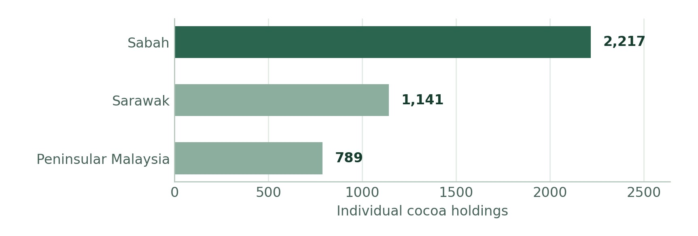
Department of Statistics Malaysia. The Peninsular total is the national individual total less Sabah and Sarawak. [21]
Sizing level
Definition
Illustrative seasonal fee pool
Malaysia reference ceiling
4,147 census individual holdings × RM75
RM311,025 if every holding were eligible, active and sponsor-funded.
Sabah and Sarawak ceiling
3,358 individual holdings × RM75
RM251,850. The main target region for paid clusters.
Peninsular reference ceiling
789 individual holdings × RM75
RM59,175 under the same arithmetic assumptions.
2028 target (Phase 2)
60 active farms × RM75
RM4,500, about 1.4% of the Malaysia ceiling.
First paid cluster (Phase 1)
20 active farms × RM75
RM1,500 seasonal revenue if signed and fully active.
The census counts holdings. The RM75 fee is a team assumption, so these ceilings show the arithmetic only. To estimate a reachable market, count the eligible farms on a sponsor’s roster, confirm the budget and measure active use through a paid trial. Outside Malaysia, the same service model applies to cocoa smallholders in Indonesia and West Africa (p.6), to be priced locally.
Unit Economics and Pricing Sensitivity
The test offer charges the sponsor RM75 per active farm per season. The model uses RM600 per cluster for onboarding and support, plus RM30 per active farm for delivery. These costs and the fee are untested planning assumptions.
Figure 13. Contribution at RM75 per active farm
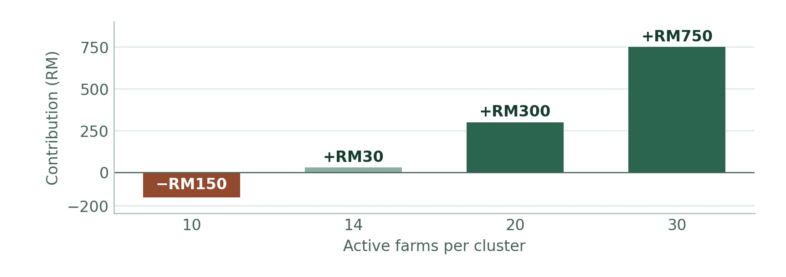
Illustrative contribution = (RM75 − RM30) × active farms − RM600. At 20 active farms, revenue is RM1,500 and direct cost is RM1,200.
Figure 14. Contribution by fee and cluster size
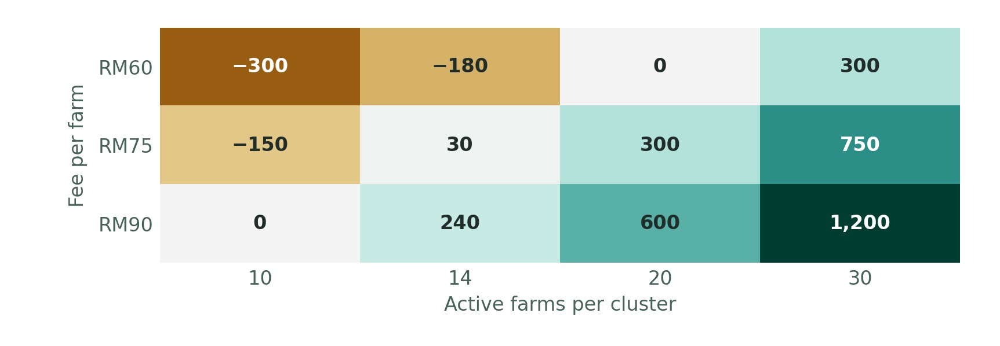
Illustrative RM contribution per cluster per season. Negative values show a shortfall on direct costs in this scenario.
Break-even and Renewal
Direct-cost break-even is 14 active farms at RM75. It rises to 20 at RM60 and falls to 10 at RM90. This calculation excludes product development, general overhead and taxes. Renewal depends on a sponsor’s willingness to pay and the delivery cost measured during a real trial.
Pilot Budget and Operating Assumptions
The one-farm pilot (Phase 0) needs an estimated RM1,200 in cash. This is a validation budget. By coincidence it equals the direct cost of a 20-farm cluster on p.24, but the two figures are unrelated.
Figure 15. Cash estimate for the first farm pilot
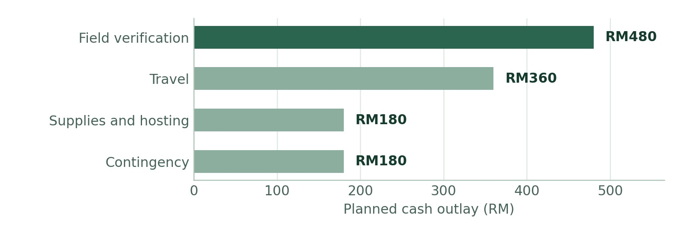
Planning estimates in RM. Travel assumes six trips at RM60, and field verification allows for four sessions at RM120. Quotes and adviser arrangements are pending.
Cost line
Basis
RM
Field verification
4 adviser review sessions × RM120, one per scored round
480
Travel
6 field trips × RM60: 1 setup and mapping, 1 dry run, 4 scored rounds. Follow-up checks happen on the same visit as each round.
360
Supplies and hosting
Printed materials, form hosting and connectivity
180
Contingency
Extra travel or field materials, for example a fifth round if one is unusable
180
Drone survey
Camera drone borrowed from Universiti Malaya; batteries charged on campus
0
Estimated cash total
Student labour and existing devices tracked separately
1,200
Cost Validation
Record travel, scout time and adviser review effort separately. If weather delays the trial, re-estimate the number of visits before spending the contingency. If the service needs paid on-site support at every farm, update the RM30 variable-cost assumption before offering a commercial price.
Cross-Crop and International Adaptation
The transferable parts are the block map, ranking, scout checklist and review log. Local teams specify the crop, target disease, weather input, crop stage and field confirmation method. Each new setting uses its own usual route as the comparator.
Candidate geography
Crop and adaptation
Malaysia
Cocoa black pod. Use the first pilot to measure routes under local rain and field conditions. [4]
Indonesia, Ghana and Ecuador
Cocoa. Repeat the workflow with local crop calendars, field access and case labels. These three countries appear in the rainfall and yield study. [3, 9, 19]
China and India
Rice blast. Walk a rice-field scenario with relevant moisture and crop-stage indicators. China is the proposed first cross-crop demonstration. [11, 12, 14]
United States
Grape downy mildew. Test how an existing advisory could inform a vineyard route. [13]
Brazil
Potato late blight. Use locally appropriate weather advisories and scouting checks. [15]
Evidence Required Before Scale
Repeat the cocoa comparison with a second grower. The working prototype already switches to a China rice profile with crop-specific inputs and a separate scout log. A field comparison needs a local rice partner, an adviser and an agreed baseline. In a rice trial, the outcome becomes confirmed affected blocks per scouting hour, counting each block once per round.
Figure 16. China rice profile on mobile
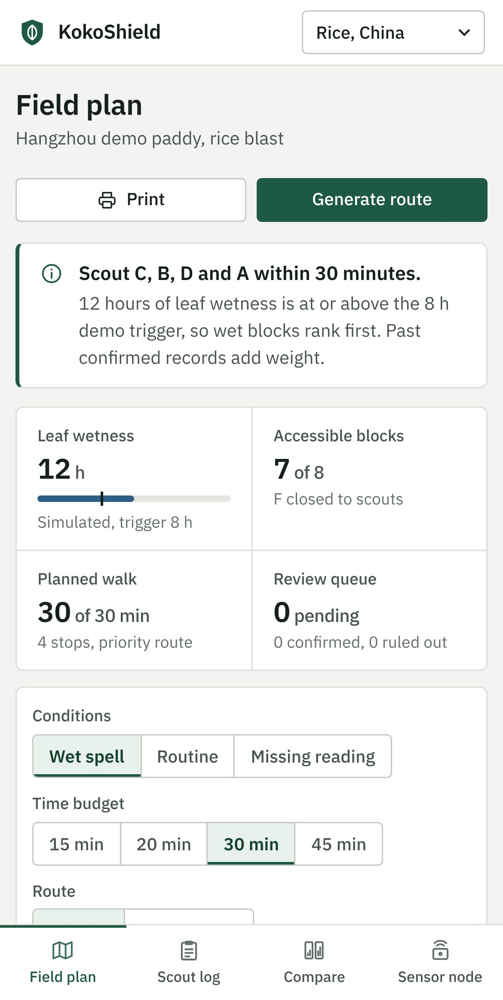
Excerpt from the mobile prototype. The Hangzhou paddy and leaf-wetness reading are illustrative. No cross-crop field results are reported.
Competition Timeline, Team and Delivery
The public guide lists Ignite deliverables as team information, the project proposal and a two-minute overview. Build runs through 22 February 2027 and asks for a documented solution, user feedback and a 10-minute regional presentation with a live prototype demonstration. The Global Finale is at Zhejiang University in Hangzhou on 20–21 May 2027. [1, 10]
Figure 17. Proposed eight-week Build work plan
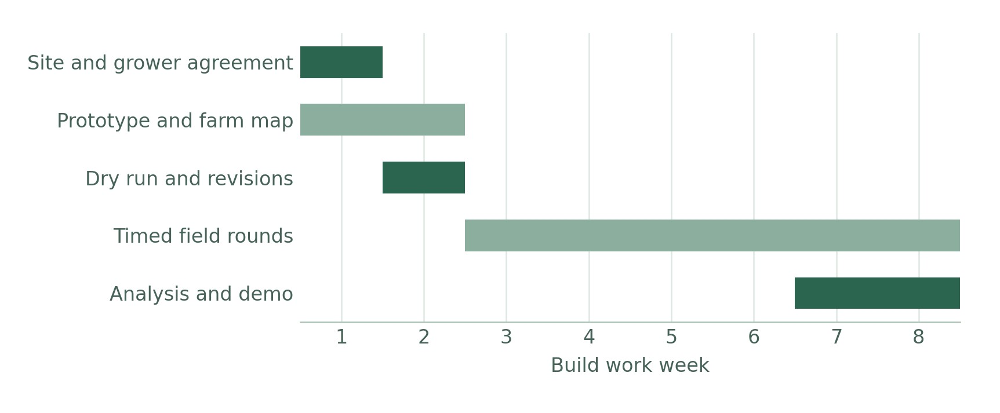
Internal plan. Field weeks depend on a signed site agreement, safe access and usable rain events. If no site is signed by the end of week 1, the team switches to the backup grower (p.28), and the dry run moves to week 3.
GSC phase
Output the team plans
Ignite
Problem statement, example route, team information and a two-minute project overview video.
Build
Take the tested browser prototype into the Malaysian field comparison (Phase 0). Present field findings and user feedback at the regional final at HKUST if selected. [10]
Shine, if selected
Present Malaysian pilot results, the first sponsor conversations and a rice adaptation demo. Describe requirements for a second site and a paid cluster trial.
Team
Member
Lead role
Responsibilities
Leow Shen En
Grower engagement
Site agreement, grower interviews, block mapping and permissions.
Chong Pohyi
Prototype and data
Field Desk, Bubble integration, data model and CSV analysis.
Choong Zhuo Lin
Trial coordination
Rain trigger, round scheduling, scout rotation and adviser reviews.
Lee Jia Shern
Commercial
Sponsor shortlist, discovery calls, pricing and the letter of intent.
All five members are at Universiti Malaya. Protocol versions and decisions are kept in one shared project log.
Risks and Decisions Before Scale
The priority is a field test that growers trust. The controls below protect completion and prevent over-reading early results.
Risk
How the team will respond
Decision point
Pilot access is delayed
Approach a second grower with comparable access, regular scouting and a clear review contact.
Confirm a site by the end of Build week 1.
Few usable rain events
Keep dry-run usability feedback and extend observation if conditions do not allow comparison.
Explain limited field evidence at Build.
Rain data is too coarse
Record the public gauge’s distance and data age [8], confirm with the grower and allow manual readings.
Drop or revise a signal that cannot separate blocks reliably.
More finds with more misses
Run the same systematic follow-up and show missed-case counts for both routes.
Investigate repeated blind spots before adding sites.
Low grower or sponsor uptake
Record why scouts override routes. Test approval and renewal criteria with at least five sponsors.
Re-price or revise delivery after measuring actual support.
Drone cannot fly
Use the grower’s own wet-block observation, which the route already supports. Fly only with consent, under current CAAM rules and never in storms.
Keep the drone optional until it adds information in two rounds.
Data privacy concerns
Grower owns the record. Sponsors see aggregated coverage unless the grower consents.
Agree data terms before any farm data is collected.
Local rule fails abroad
Review crop and weather settings with a local adviser and run an equal-time local test.
Treat demonstrations as examples until field work is complete.
Evidence to Bring to the Next Site
A second partner will receive the test protocol, a data dictionary, the results by round and any known limitations. This shows the partner what needs updating and what evidence would support another season.
[25] Guest, D. Black pod: diverse pathogens with a global impact on cocoa yield. Phytopathology 97(12), 2007. doi.org/10.1094/PHYTO-97-12-1650
[26] United Nations. Sustainable Development Goals: targets 2.3, 2.4, 13.1 and 17.17. sdgs.un.org/goals
Reading the Figures
Figures 3–5 and 12 use published sector data. Figure 6 contains credited reference photographs. Figures 7, 8, 9, 10 and 16 show the software, CAD and drone-survey concepts, including the prototype gallery. Figures 1–2, 11, 13–15 and 17 show team assessments, sample inputs, financial assumptions or plans. Field results will be added after the pilot.